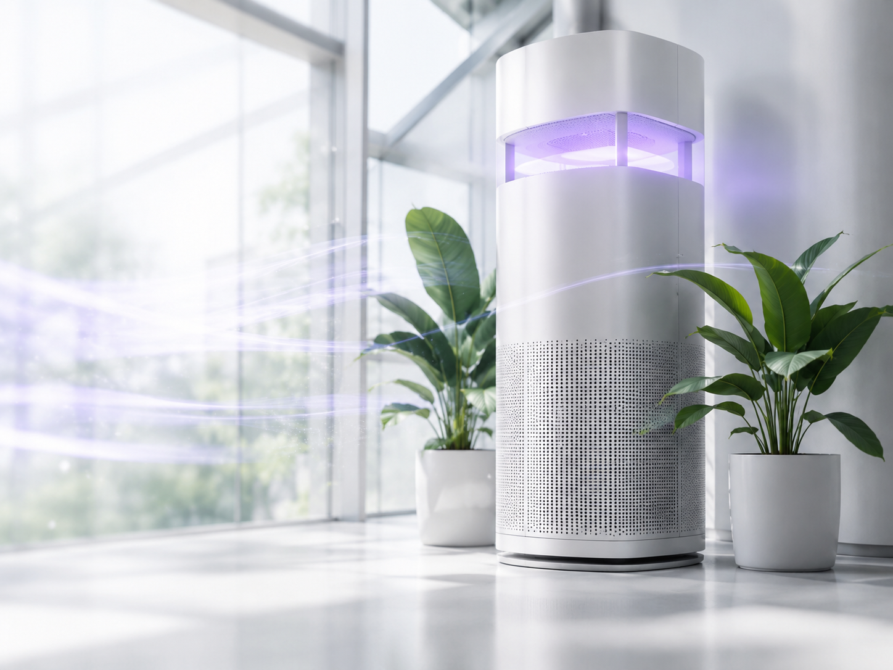

Continuous treatment in occupied rooms.
Ceiling height, fixture placement, air-change rate, mixing, shielding, reflective surfaces, and room use all influence delivered air treatment and occupied-zone safety.
Air systems must deliver sufficient dose while accounting for residence time, mixing, optical shielding, pressure drop, occupancy, and maintenance. Bolb supplies the LEDs and modules; customers integrate them into the finished fixture.

A microbial-reduction result belongs to the complete system and its test conditions—not to an LED by itself. Bolb LEDs and modules provide wavelength and optical power; the OEM controls geometry, dose distribution, airflow or flow, shielding, sensing, thermal design, and final validation.
The engineering problem is not simply LED output. The design must create a controlled upper-room irradiance field, limit exposure below the mounting plane, and use natural or mechanical mixing to transport airborne pathogens through the treated zone.
Ceiling height, fixture placement, air-change rate, mixing, shielding, reflective surfaces, and room use all influence delivered air treatment and occupied-zone safety.
S3535-H packaged LEDs support compact multi-emitter fixtures; 1×12 or custom arrays can support elongated optical fields, air channels, troffers, and purifier geometries.

A customer-developed ceiling fixture uses four Bolb S3535-H 265 nm LEDs with an optically shielded lateral distribution system. It is shown to demonstrate how an OEM can turn Bolb emitters into an occupied-space upper-room air solution; the fixture itself is not sold or warranted by Bolb.
System developer and publication permission should be identified before launch. Complete-system performance, safety, certification, warranty, and support remain the responsibility of the system manufacturer.
Targeted systems use a stronger local field and controlled cycles, making working distance, shadows, sensor coverage, access, clear-time logic, and fault response central to the design.
The optical cone must cover the intended air and visible surfaces, while the sensing and control architecture interrupts treatment when a person or pet enters the zone.
Choose emitter count and optical layout from the lowest-dose point, working distance, cycle target, enclosure, and cooling volume—not from fixture appearance alone.

A customer-developed fixture combines a 265 nm UV-C source with radar/PIR presence detection, an automatic iris, defined cycle states, and local status indicators. The architecture illustrates a compact OEM solution; confirm the exact Bolb emitter or module configuration before identifying it as Powered by Bolb.
The performance examples below are calculations published in the customer data sheet. They are not universal guarantees and must not be applied to a different room, surface, organism, dose map, or operating cycle.
These examples demonstrate what complete systems using UV-C LEDs can achieve. They do not establish one universal “Bolb LED kill rate.”
Two upper-room fixtures added to a 240 ft² conference room with an existing 6 ACH HEPA system.
Calculated in 10 minutes for a 700 ft³ room under the airflow and susceptibility assumptions listed in the customer data sheet.
Calculated in 3.1 minutes over a 36 ft² surface field at the stated counter geometry.
Use “a reference system using Bolb LEDs achieved/reported…” followed by the organism, reduction, flow or room geometry, exposure time, and evidence type. Avoid “Bolb LEDs achieve 99.9%” without the complete conditions.
| Design question | Upper-room | Targeted treatment |
|---|---|---|
| Primary target | Mixed room air in an upper zone | Local air and line-of-sight surfaces |
| Occupancy | Designed for occupied-space operation when properly engineered | Cycle interrupted by presence or access |
| Source geometry | Distributed lateral field; linear or custom array may fit | Compact concentrated field; packaged LEDs or compact array |
| Main validation | Air mixing, lower-zone exposure, eACH or equivalent treatment performance | Lowest-dose point, shadows, sensor coverage, clear time, and cycle completion |
Include room dimensions, ceiling height, airflow or ACH, occupancy, target treatment rate, optical field, cooling, and expected production volume.